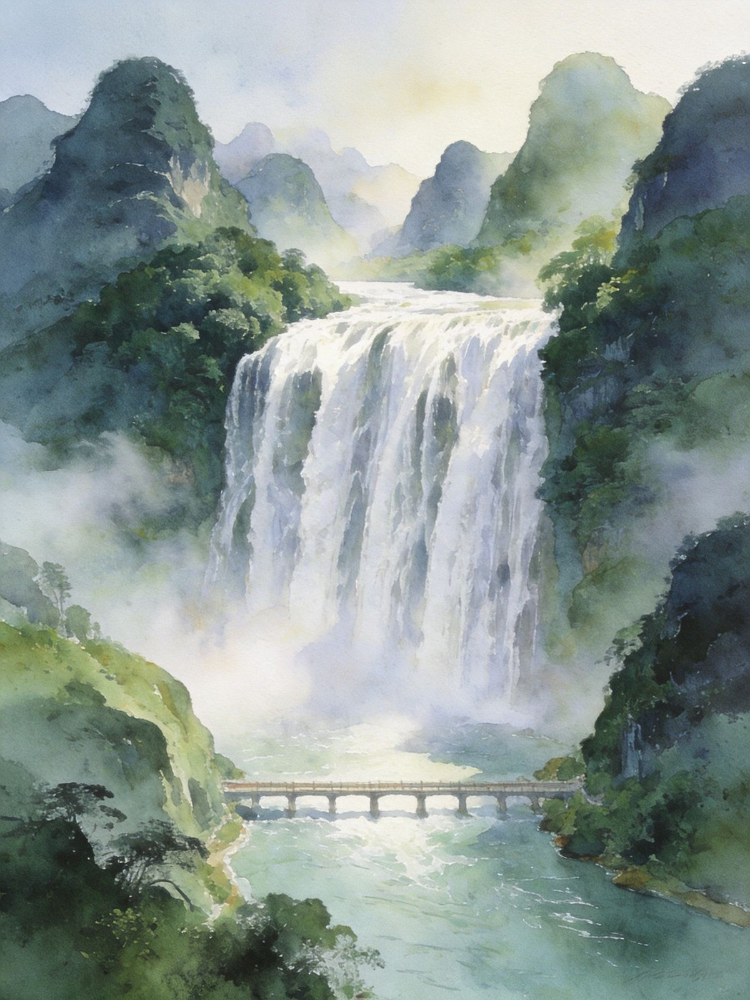
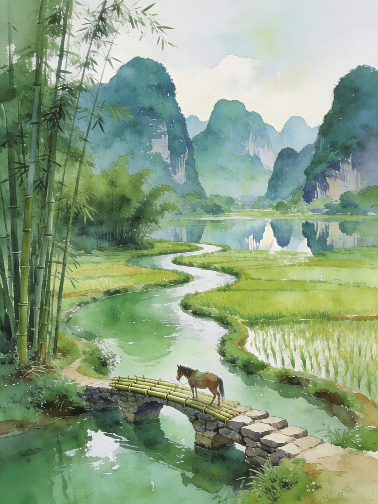
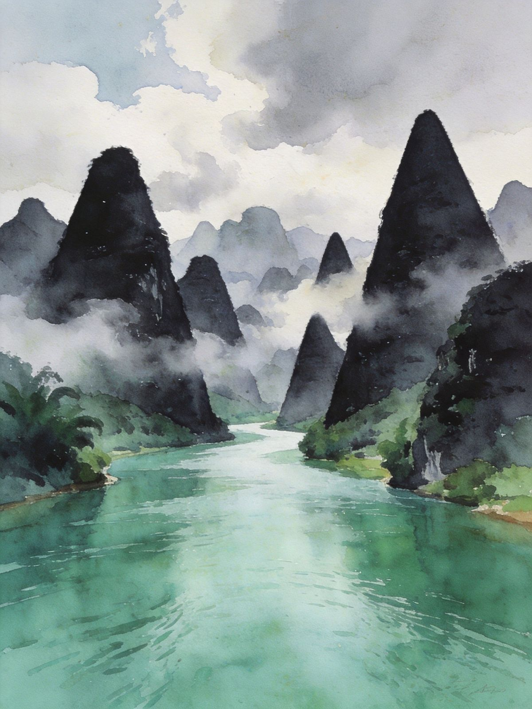

封面
总览
行前·交通
德天瀑布 · Day1
明仕+返程 · Day2
3日深度线
边关玩法
美食清单
组合·贴士
避坑提示

CHONGZUO · BORDER LANDSCAPE
崇左·德天
跨国瀑布 · 明仕田园 · 边关山水
德天瀑布
明仕田园
黑水河
友谊关
5A
广西 · 崇左
A5 口袋手册
· 2-3天
1
/ 10
崇左德天
动线总览
2–3 天怎么玩
Route Overview
2天
经典
德天瀑布 + 明仕田园
观瀑台、界碑、跨国集市；住明仕看日落
3天
深度
+ 崇左石林 + 黑水河/友谊关
完整中越边关线，一次看够喀斯特
TIP
德天瀑布
是世界第四大、亚洲第一跨国瀑布，宽约 200 米、落差 50 余米；下游
明仕田园
被誉为「小桂林」，《花千骨》取景地。
1–3 人
适合自驾/包车。
TIP
🎫 丰水期为 6–10 月，水量最壮观；
身份证必带
（边境景区刷证）。票价以景区当日公示为准。
2
/ 10
崇左德天
行前准备
出发前，记住
3 件事
Before You Go
🚅 怎么去
高铁至
崇左南/宁明
，再包车/旅游车至德天（约1.5–2h）
自驾(推荐)
：南宁→G322→德天，约2.5–3h，边关线风景佳
📅 最佳季节
丰水期 6–10 月
水量最大最壮观（《下雨季防滑》）
枯水期清爽，瀑布上游有蓄水仍可观
🪪 证件提醒
德天位于
边境
，
身份证必带
，进景区刷证
跨国（越南板约）需办正规手续，勿自行越界
TIP
上午前往顺光明亮，下午背光偏暗。最佳观瀑点：观瀑台、界碑、跨国集市。
3
/ 10
崇左德天
Day1 · 德天瀑布
Day1 · 全天
亚洲第一跨国瀑布
观瀑台步道
→
1337号界碑
→
跨国集市
→
返明仕
🌊 主看点
多层瀑布从
两国喀斯特山崖
倾泻，宽200m/高50m
踩水/观瀑台步道近观水雾，气势磅礴
「
踏水逐仙梯
」木质步道，瀑布中段看水帘
🎫 玩法
1337 号界碑
打卡，「德天跨国大瀑布」石碑
跨国集市
中越边民摆摊，可买越南咖啡/小商品
勿越界拍照
，服从景区引导
TIP
丰水期（6–10 月）来最壮观；旺季人流极大，
索道/观瀑台排队久
，建议错峰或早到、上午顺光拍摄最佳。
4
/ 10
崇左德天
Day2 · 明仕田园 + 返程
Day2 · 全天
小桂林 · 喀斯特田园
明仕竹筏
→
九曲桥/观景台
→
黑水河
→
返南宁
🛶 明仕田园
数百座
喀斯特峰林
环抱，翠竹、稻田、溪流蜿蜒
《花千骨》《酒是故乡醇》
取景地，4A 景区
竹筏约40–60分钟，清晨人少景美
📸 打卡机位
九曲桥、观景台
看峰林倒影
日落时分金色稻田+青峰剪影最出片
TIP
德天、明仕相距约
40 分钟车程
，宜同游；返程顺路可加
黑水河泛舟
（号称「边境小漓江」）。

明仕田园

喀斯特峰林
5
/ 10
崇左德天
3日 · 深度线
深度 · 玩透
完整中越边关线
D1 崇左石林/斜塔
→
D2 德天+明仕
→
D3 黑水河/友谊关
D1
南宁 → 崇左
高铁/自驾，游崇左石林、斜塔、太平古城
D2
德天·明仕（主菜）
德天瀑布一整天 + 界碑；住明仕看日落
D3
边境/返程
黑水河泛舟或凭祥友谊关，下午返南宁
TIP
凭祥友谊关
是广西重要陆路口岸，可顺路一游，与德天构成完整边关线。沿边公路 G219 在边境区域可能有检查，配合即可。
6
/ 10
崇左德天
边关玩法
边关
· 黑水河 · 沿边公路
Border Experience
🌊 黑水河
被称「
边境小漓江
」，可竹筏/快艇穿行钙华河段
河水碧绿，两岸树林与峰林相映
🛣 G219 沿边公路
串起
恩城、硕龙
等喀斯特村寨
自驾边关线，体验中越边境风光与人文
🏯 友谊关
广西重要陆路口岸，中越通关要道，历史厚重
TIP
跨境请走
正规手续
，勿跨越界碑/界河。沿边区域配合检查即可。
黑水河
沿边路
7
/ 10
崇左德天
边关美食
边境味道
· 酸辣与越南风味
Eat · Border Flavors
🥣
崇左酸粥
本地招牌，酸辣开胃
🍜
石磨米粉 / 卷筒粉
边境特色粉食
🍚
黑衣壮糯米饭 / 糍粑
壮族传统主食
☕
越南风味
越式檬粉、法棍面包、滴漏咖啡（边境可见）
TIP
德天
跨国集市
可买越南小商品/咖啡；边境餐饮整体实惠。山珍野菌、酸笋鸭、香叶焗鸡也值得尝。
8
/ 10
崇左德天
组合玩法 · 出行贴士
怎么串成
一条线
Route & Tips
崇左边关跨度较大，按方式选：
🚗 自驾（推荐）
德天—明仕串游，沿边公路看风景，最灵活
自由度最高
🚙 高铁+包车
到崇左南/宁明包车，省心、司机熟边关路
去龙脊优选
🚌 跟团/直达大巴
省心省力；班次少、需核对当日时间
图省心
TIP
2–3 人想自由看山水→
自驾或包车
；竹筏/景区旺季人多，
身份证必带
，配合边境检查即可。
9
/ 10
崇左德天
避坑提示
看清这些，玩得更安心
Stay Safe
👥
旺季人流
丰水期五一/国庆人流极大，索道/观瀑台排队久——错峰或早到
🌧
雨季山体
山区易滑坡，遇暴雨关注交通管制，勿强行驾车
🚫
跨境边界
勿自行跨越界碑/界河，需走正规跨境手续
🪪
证件
身份证必带；沿边公路可能有检查，配合即可
⚠️
紧急
紧急拨 110 / 120；票务纠纷拨 12345
崇左边关山水「WorldStip」祝你玩得开心 🌊
10
/ 10
WorldStip · 崇左德天 · 德天跨国瀑布 / 明仕田园 / 黑水河 / 友谊关 · 数据以景区当日公示为准
Insta360
记录美好
记录美好生活
相机指南 · CAMERA GUIDE